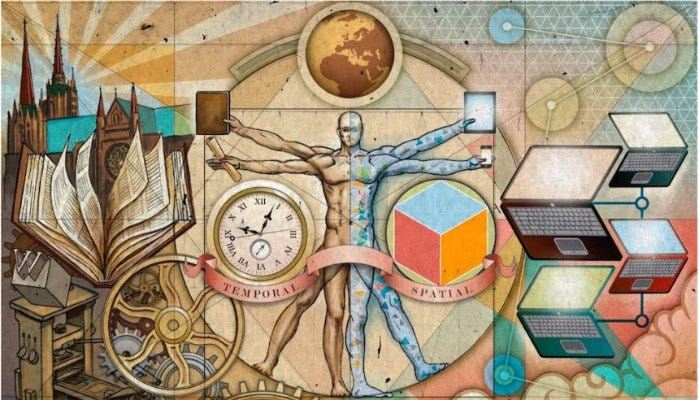

Purpose
The purpose of this idea is to graspe an idea for the future. Technology of the past will never return as it remains a staple of the start of some groundbreaking innovation. To prove this point, take the first ever computer.
FA25-IN-INFO-I101-24208
Email: johndoe@iu.edu | Phone: (###) ###-####